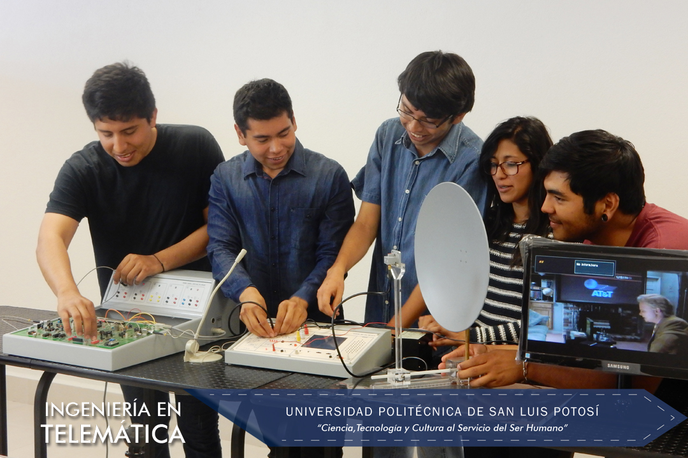

Ingeniería en Telemática [Mantenimiento

En la carrera de Ingeniería en Telemática, se prepara a los estudiantes en tres grandes áreas del conocimiento que conforman la carrera y las cuales son:
El programa educativo de Ingeniería en Telemática, se divide en tres ciclos de formación académica, los cuales permiten al estudiante poder optar por por el título de Profesional Asociado en el cuarto semestre, el de Licenciado Técnica en el sexto semestre y el grado de Ingeniero en Telemática al concluir el programa de estudios en su totalidad.
Los estudiantes de la carrera de Ingeniería en Telemática tienen la posibilidad de participar en una gran cantidad de actividades del tipo académicas, como lo son las visitas a empresas del sector, en proyectos de investigación aplicada, asistencia a congresos y los intercambios estudiantiles con otras universidades nacionales e internacionales.
- Las redes de telecomunicaciones, en dicha área del conocimiento se incluyen los temas que tienen que ver con los sistemas de telecomunicaciones de la actualidad, como lo son las redes de área local, las redes de cobertura amplía, las redes convergentes de voz, datos y video, las redes de telefonía celular, los sistemas de microondas terrestres y vía satélite, así como los estándares para instalar la infraestructura de cableado estructurado.
- Las tecnologías de la información, que es el conjunto de aplicaciones basadas en software y equipos informáticos que hacen uso de las redes de telecomunicaciones para la transmisión y ejecución de las mismas; entre un sinnúmero de aplicaciones encontramos: la programación web, el diseño de bases de datos y de conocimientos, aplicaciones de voz y video, programación para dispositivos móviles y para el posicionamiento de vehículos.
- Los sistemas embebidos, es un área del conocimiento en constante desarrollo industrial y se refiere a sistemas electrónicos que incluyen una micro-computadora, entradas y salidas estándares, conectividad y software. Esta micro-computadora puede adaptarse a casi cualquier tipo de aplicación, siendo su principal ventaja la movilidad y la conectividad; haciendo realidad el concepto de internet de las cosas. Los sistemas embebidos pueden obtener, procesar, transmitir y recibir información de diferentes fuentes incluyendo sensores y dispositivos típicos de entrada/salida. Las aplicaciones en este sector son ilimitadas, por ejemplo, el sector automotriz, los servicios de salud, la automatización de líneas de producción, diversión, comercio, ciudades inteligentes y educación.
Mision del programa
“El Programa Educativo de la carrera de Ingeniería en Telemática está comprometido con la excelencia en la formación integral y humana, y con el aprendizaje, el desarrollo y aplicación del conocimiento en los campos de las telecomunicaciones y la informática. Esta comprometido con la sociedad para mantener una oferta educativa pertinente en el área y desarrollar investigación aplicada involucrando alumnos en la solución de problemas de la sociedad. “
Plan de Estudios
Consulta el Plan de Estudios
Certificaciones:
- Oracle:
- Oracle Certified Associate, MySQL 5
- Oracle Certified Professional, MySQL 5.6 Developer
- Oracle Certified Associate, Java SE 5/SE 6
- Oracle Certified Professional, Java SE 6 Programmer
- Oracle Certified Associate, Java SE 7 Programmer
- Oracle Certified Associate, Oracle Solaris 10 Operating System
- Oracle Certified Professional, Oracle Solaris 10 System Administrator
- Oracle Certified Associate, Oracle Solaris 11 System Administrator
- Cisco:
- Cisco Certified Entry Networking Technician (CCENT)
- Cisco Certified Network Associate (CCNA)
- Microsoft Technology Associate: Database Fundamentals
- Microsoft:
- Microsoft Office Specialist: Microsoft Office Word 2013
- Microsoft Office Specialist: Microsoft Office PowerPoint 2013
- Microsoft Office Specialist: Microsoft Office Excel 2013
Logros / Distinciones
- Mejor Academia a nivel Latinoamérica que promueve la certificación, el programa Cisco Networking Academy Program y que forma nuevos estudiantes en el área de TI
- 3 medallas a estudiantes ejemplares otorgadas por la asociación Trayectoria de Éxito.
- 1er, 6º, 5º lugar concurso Netriders México, 2009, 2011 y 2013.
- 1er lugar expo ciencias otorgada por la Red Nacional de Actividades Juveniles en Ciencia y Tecnología, 2012 y 2013.
- 5º y 6º lugar en el Torneo Mexicano de Robótica, 2016.
- 150+ Certificaciones CCNA y CCENT como Academia CCNA
- 480+ Certificaciones JAVA y Solaris como Academia Oracle.